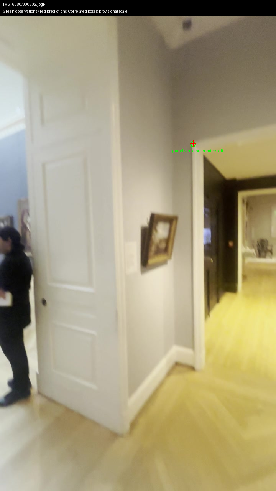
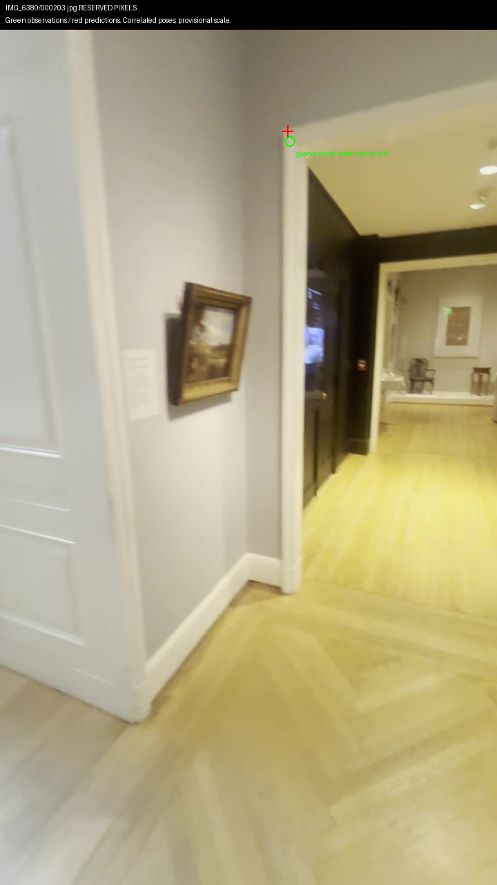
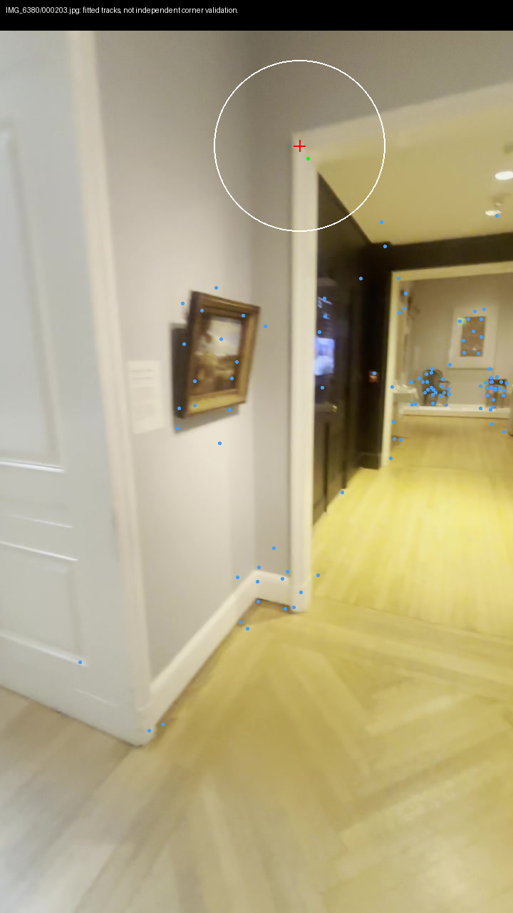
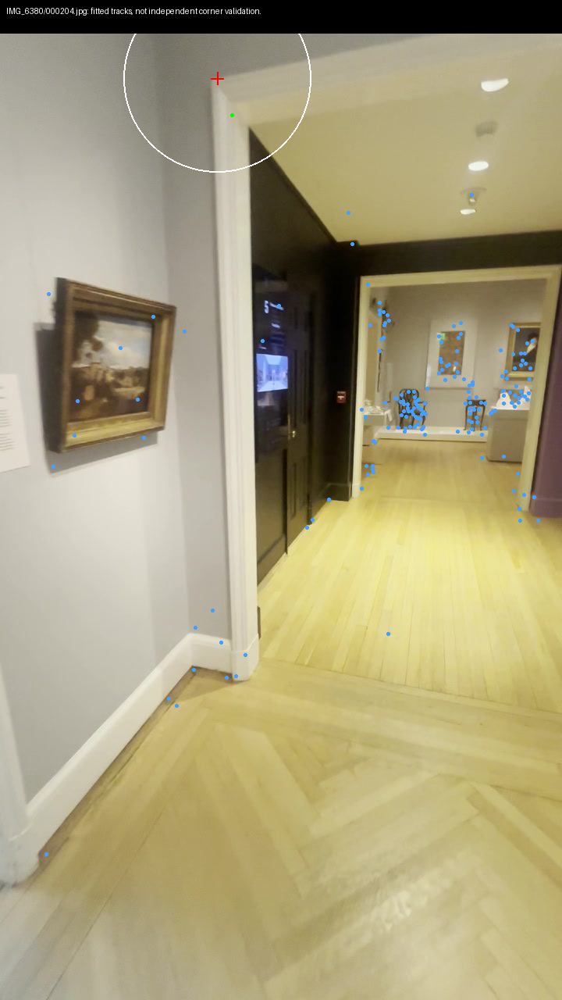
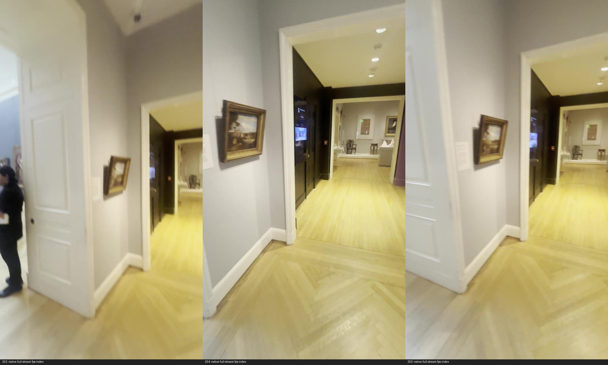
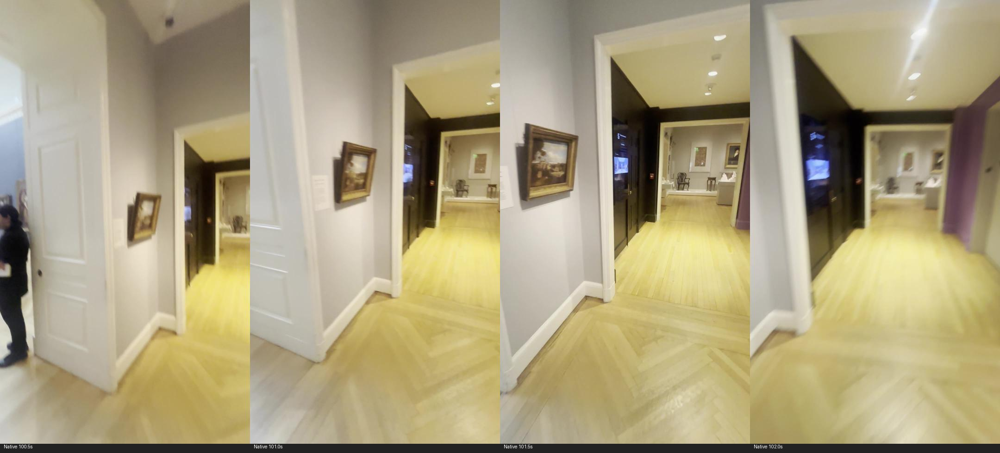
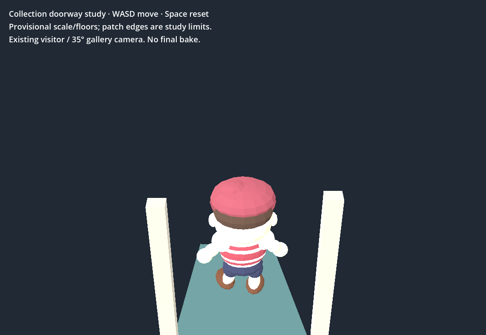
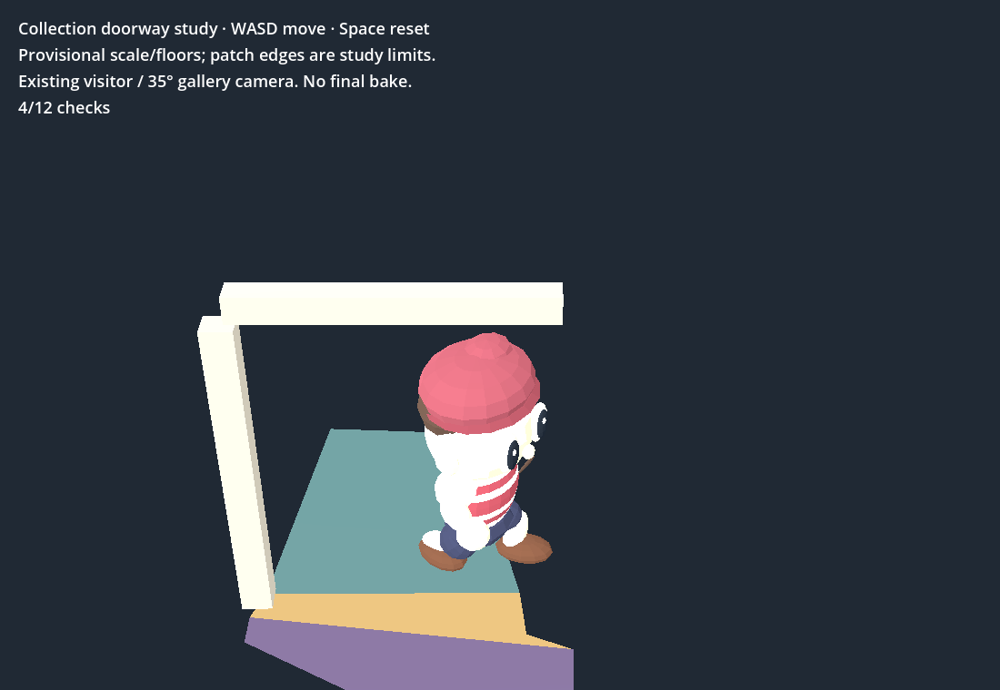

New outer-mitre candidate fails its reserved frame by 14.90px, above the unchanged 8px gate. The marked positions may identify different parts of the bevel; this is a rejected experiment, not accepted casing geometry. Original picks and failed result remain frozen. No floor/collision extension.


Measurement and uncertainty · Original marks. Ray angle 9.41°; picking sensitivity p95 8.41 provisional cm excludes camera/scale uncertainty.


Local coverage audit · Runnable audit source. Proximity does not establish that a track belongs to the same physical casing face.


NVDEC/scale_cuda command, index mapping and hashes · Sampling comparison.
Play existing bounded doorway study — WASD moves, Space resets. Patch edges are study limits, not complete museum walls. All 24 native/RTX-browser checks and real keyboard crossing/return pass. No new navigation geometry.


RTX native checks · RTX browser checks · Initial failed capture invocation retained · Initial integrated-GPU browser run. Native invocation corrected by creating its output directory and explicitly selecting NVIDIA; no scene changes.
Shell has seven failures · All failure names previously observed · Repository checks pass · Pose helper checks pass · Frozen model/walk pins match · Inputs, outputs and spend.
Completed holdout remains 49/69 supported, 46/69 under the split-point audit. Nearby same-video frames do not establish independent survey accuracy. Existing Muse frame/sheet and rejected head surface inspected; receipts remain $0.02 combined, $0 this tick. 3D Viewer unchanged.
Next: define a new casing-plinth edge junction in native-resolution crops, verify the same physical endpoint in each source view before fitting, and reserve an untouched query. Do not tune the rejected header/toe marks, infer opening width from exterior casing separation, or invent unseen connections. Independent scale, complete room geometry, sculpture rear coverage and final bake remain unresolved; automation stays enabled.